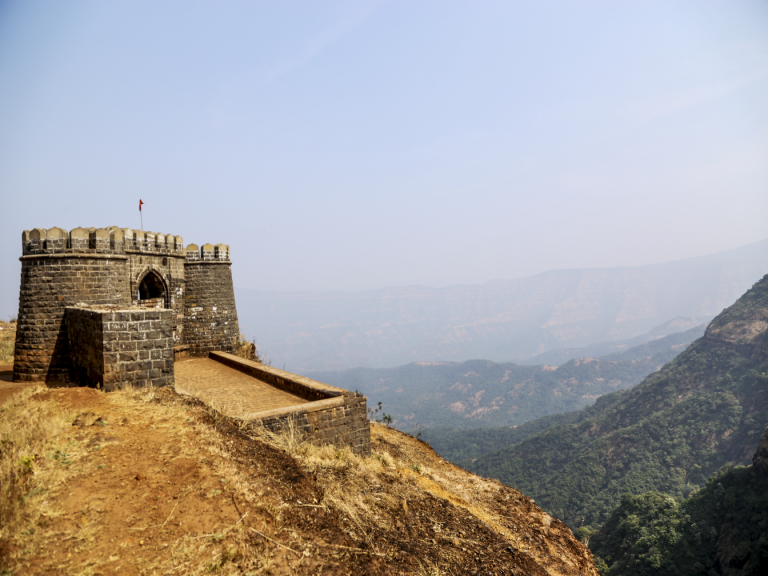
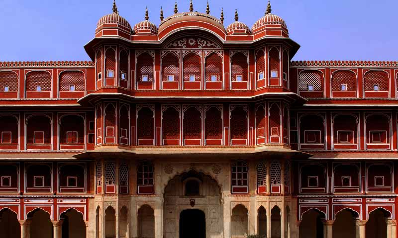

Deogiri Fort
Roha Beach entices with its pristine sands and tranquil waters, offering a serene retreat from bustling city life. The gentle lapping of waves against the shore creates a soothing ambiance, perfect for relaxation and contemplation. With its unspoiled beauty and peaceful atmosphere, Roha Beach promises an unforgettable coastal experience for nature lovers and beach enthusiasts alike.

Singagad Fort
Diveagar Beach's tranquil shores and azure waters offer a serene escape from daily life's hustle and bustle. Stroll along its sandy expanse, embracing the gentle sea breeze and untouched beauty. Diveagar's captivating sunrises and tranquil sunsets create an unforgettable coastal experience.

Shivneri Fort
Kashid Beach's golden sands and crystal-clear waters invite travelers to unwind amidst nature's embrace. Enjoy leisurely walks along the shoreline, framed by lush green hills, and indulge in sunbathing or water sports. Kashid's picturesque vistas and serene ambiance promise an unforgettable coastal getaway.

Panhala Gad
Aaravi Beach's untouched coastline and unspoiled landscapes provide a serene retreat from urban chaos. Lose yourself in the rhythmic melody of crashing waves and swaying palm trees. With its secluded charm and breathtaking sunsets, Aaravi Beach is a hidden paradise for those seeking tranquility and natural beauty.

Vishal Gad
Aaravi Beach's untouched coastline and unspoiled landscapes provide a serene retreat from urban chaos. Lose yourself in the rhythmic melody of crashing waves and swaying palm trees. With its secluded charm and breathtaking sunsets, Aaravi Beach is a hidden paradise for those seeking tranquility and natural beauty.

Lal Mahal
Secluded from tourist crowds, Borlipanchatan Beach charms visitors with its pristine coastline and tranquil atmosphere. Revel in peaceful picnics, shell collecting, or simply laze under the sun, surrounded by breathtaking vistas. Borlipanchatan offers an off-the-beaten-path adventure for nature lovers seeking solace by the sea.